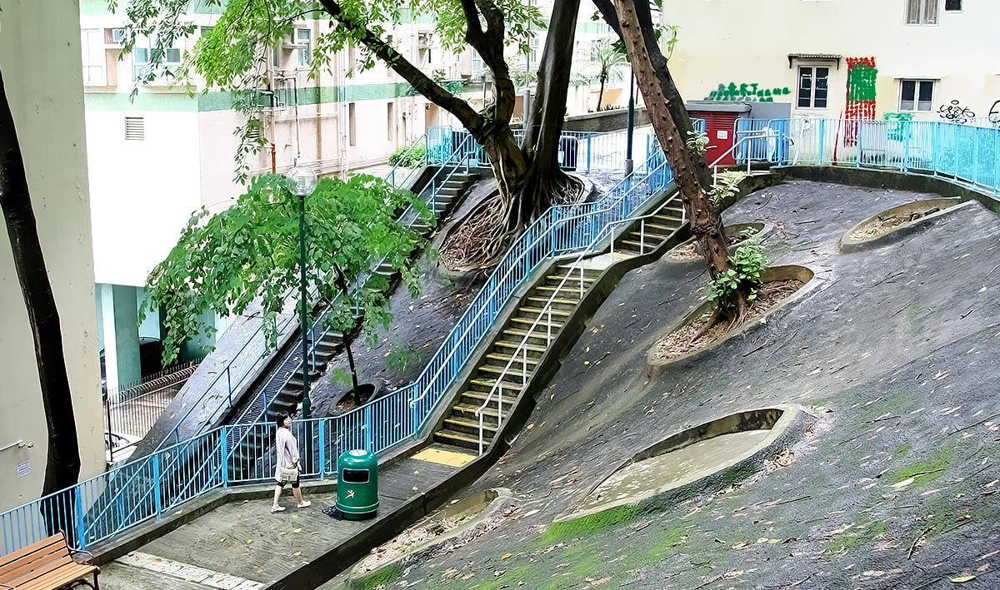
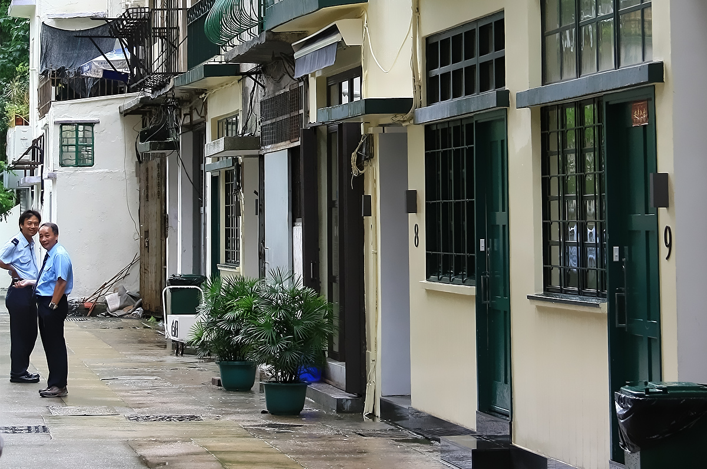
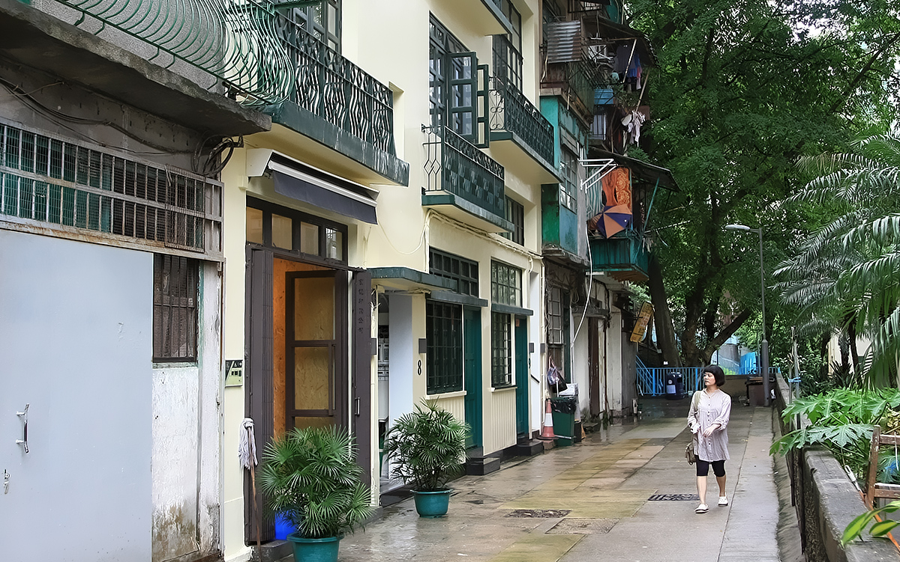

永利街可能听上去陌生，但如果说《岁月神偷》你一定记得。电影里任达华吴君如一家的“罗记皮鞋”鞋屋就在永利街上。磅巷的大榕树找起来还算容易，永利街找起来还真费了一番功夫。拿着地图，从西往东走，发现前面已经没路了，往下是必烈士者街，往上是坚道，而前面只有一条看上去通往居民区的沿小山坡而建的窄路。上下走了一圈都没有发现永利街的影子，看来只能试试看能不能穿过前面这条窄小的山路了。

转个小弯，一条小街出现在眼前，一侧旧楼上的绿窗黄墙提醒着我们这就是永利街。然而街尽头的鞋屋早已不见了，显然那只是剧组搭建的临时小屋，甚至电影里为了挡住背后山坡上的那棵树，还专门放上了深绿色的挡板。一侧的旧楼大概也已经新刷过，虽然看上去有些岁月了，但还挺干净整洁。街的对面是一栋居民楼的室内游泳池。与电影里街坊们热闹的聚在巷子里不同，整条街上只有四个人，除了我们俩，另外还有两名保安，微笑着看我们一路拍着。

《岁月神偷》的获奖，使得当年保留永利街成为可能。正如电影的监制所说：“奖项和票房很快会被大家忘记，但永利街是永远的”。保留残旧的永利街，便需要翻修，这对当时的业主来说是一个很矛盾的事情。最终这笔钱不知道如何落实的，反正我们去的时候几幢唐楼已经焕然一新。画面尽头便是“罗记皮鞋”所在位置，可以 看看电影中的永利街>
